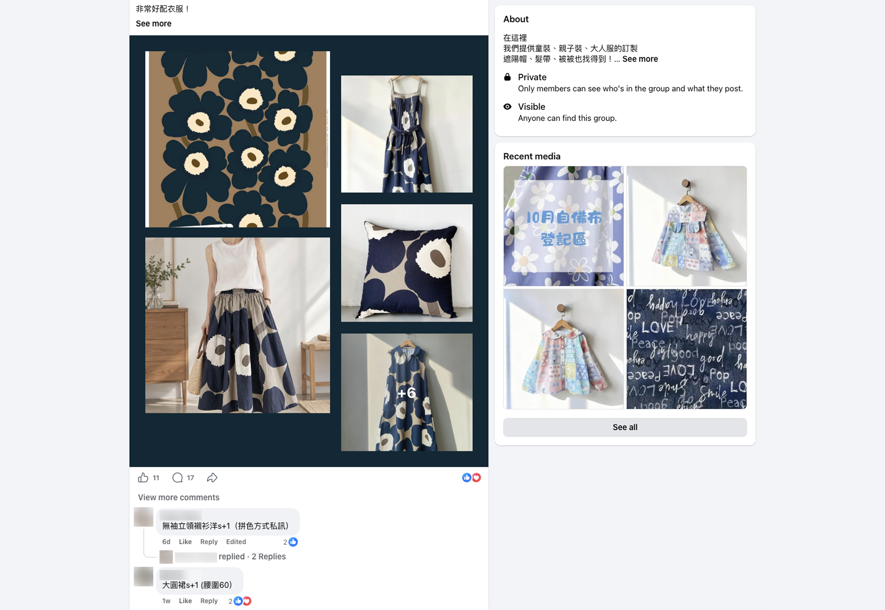
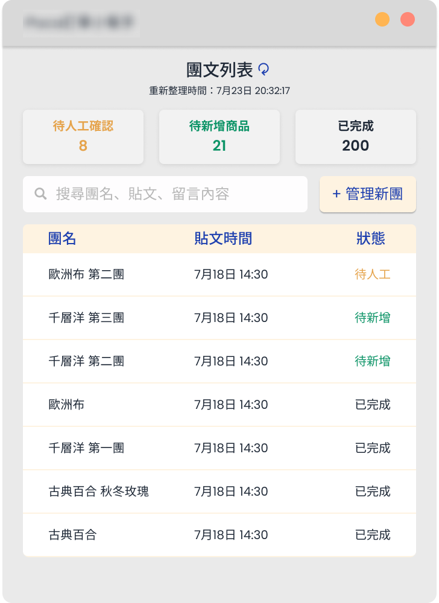
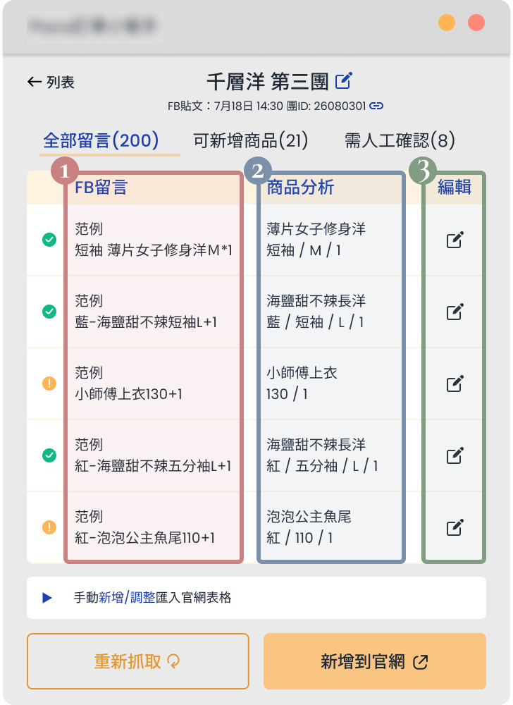

Challenge
Custom-apparel orders came through Facebook Group comments, while product and customer information was scattered across multiple platforms, creating manual work and making order tracking difficult.
APPAREL ECOMMERCE · PRODUCT
Turning an undefined optimization request into a unified ordering and data workflow.
Custom-apparel orders came through Facebook Group comments, while product and customer information was scattered across multiple platforms, creating manual work and making order tracking difficult.
Unified the ordering workflow through a Chrome Extension, connecting Facebook-based orders with a centralized ecommerce website and reducing manual work across platforms.
Led business discovery, mapped the existing workflow, and reframed the request around the underlying operational problem.
Explored solution options and evaluated technical feasibility and product trade-offs with the engineer.
Designed the Chrome Extension experience, interface, and end-to-end user flows.
Refined UX and feature requirements through testing and iterative implementation.
The company is a growing apparel ecommerce brand where customization is a core part of the customer experience. Customers can request highly flexible modifications, such as adjusting garment length or measurements, and often create matching outfits for parents and children.
Rather than selling only predefined products, the business organizes group orders around individual fabrics. Customers discover fabrics through Facebook Groups and describe what they want in post comments.
The business introduces a fabric in a Facebook Group.
Customers comment with product types and customization requests.
One fabric can become different customized products.
Each fabric post can generate multiple customized requests, turning one starting point into a variety of products.

To support order processing and checkout, the business used OrderPally, an ecommerce SaaS system for sales and order management. As the business grew, it also developed an official website to sell predefined products.
The initial request was broad:
How could we optimize it with AI?
The client wanted to use AI to simplify the process and reduce manual, repetitive work, but had no specific feature or solution in mind.
To better understand the business and identify opportunities for improvement, I led discovery with the client. I asked questions about how the business operated, from customer requests in Facebook Groups to order processing and downstream operations.
Before exploring potential solutions, I mapped how customer requests and order information moved through the business.
The two flows operated independently, with sales, order, and customer information spread across Facebook, OrderPally, and the official website. As a result, staff had to cross-check information across systems, affecting not only order processing but also multiple areas of daily operations.
As the business grew, managing these interconnected operations became increasingly difficult.
After reviewing the existing workflows and their impact on daily operations, we explored three possible approaches to improving the process.
The first direction was to automate the manual work between Facebook comments and OrderPally.
The second direction was to connect systems through a centralized data layer.
The third direction was to bring Facebook-based orders into the website's existing checkout flow.
Each direction offered different trade-offs in operational impact, customer disruption, and implementation complexity. We compared the three approaches to determine which offered the strongest overall fit.
Before comparing the three approaches, we reframed the problem. The initial request focused on reducing the manual work required to turn Facebook Group comments into orders. However, mapping the existing workflows revealed a deeper issue: ordering and customer information were fragmented across separate systems.
This reframing shifted the focus to the broader issues of workflow and data fragmentation. We therefore evaluated the three approaches against seven criteria to determine which offered the strongest overall fit.
| Option A | Option B | Option C | |
|---|---|---|---|
| Manual Effort Reduction ↑ | |||
| Information Accessibility ↑ | |||
| Data Centralization ↑ | |||
| Workflow Integration ↑ | |||
| Customer Disruption ↓ | |||
| Implementation Complexity ↓ | |||
| Ongoing Maintenance ↓ |
We decided to implement Option C — Unify the Ordering Flow because it addressed the underlying workflow fragmentation without requiring a separate centralized data layer. Compared with Option A, it offered a more integrated ordering process; compared with Option B, it avoided the added complexity of building and maintaining another system. Overall, it offered the strongest balance between workflow integration, implementation complexity, and ongoing maintenance.
While Option C offered a more integrated ordering workflow, it was less favorable in reducing manual effort and minimizing disruption to existing customers. These trade-offs informed the implementation.
To address both, we focused on automating comment capture and using AI to identify products from customer requests, while preserving the existing Facebook Group shopping experience.
Capture comments from Facebook Group posts
Use AI to identify and structure product information
Review and refine products before import
Add reviewed products directly to the website
We designed a lightweight Chrome Extension that works alongside Facebook Groups, allowing staff to capture and process group orders without relying on a separate full-screen workspace.
I translated the proposed workflow into an extension interface and supporting order-management views in Figma, then worked closely with the engineer to refine the workflow and interface during development.

Brings group orders into one workspace, allowing staff to track processing progress.


Mockup showing the extension in context.
Provides a quick overview of processing statuses and access to the group order overview.
Allows staff to add a new group order for capturing and processing.
The extension was deployed, tested, and refined through a pilot phase before its official rollout to the client.
The transition is primarily operational. While customers enjoy their familiar shopping experience in Facebook Groups, staff process requests through a unified, website-centered workflow.
| Area | Old State | New State |
|---|---|---|
| Ordering Flow | Two fragmented paths | One unified workflow |
| Order Processing | Manual comment copying | Automated capture with AI-assisted review |
| System Architecture | Multiple distinct systems | One integrated platform |
| Data Management | Disparate data silos | Centralized order & customer data |
| Cross-Platform Coordination | Manual cross-platform lookup and tracking | Single source of truth |
| Customer Experience | Separate checkout paths | Consolidated checkout while preserving native FB shopping behavior |
The new workflow reduces operational fragmentation while preserving the customer behavior that already worked.
Consolidates ordering into the primary website, reducing operational reliance on a separate platform and its associated recurring costs.
Centralizes order and customer information within the website workflow, removing the need to switch platforms and manually reconcile information.
Automates comment ingestion and product mapping, speeding up order creation.
Together, these structural improvements streamline downstream fulfillment and customer support, establishing a more consistent foundation for future growth.